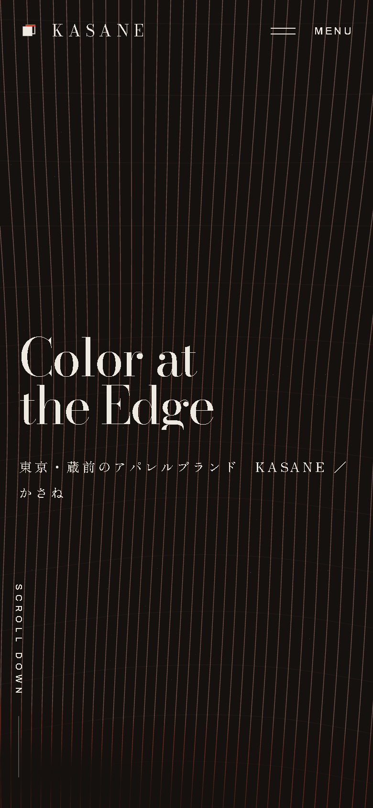
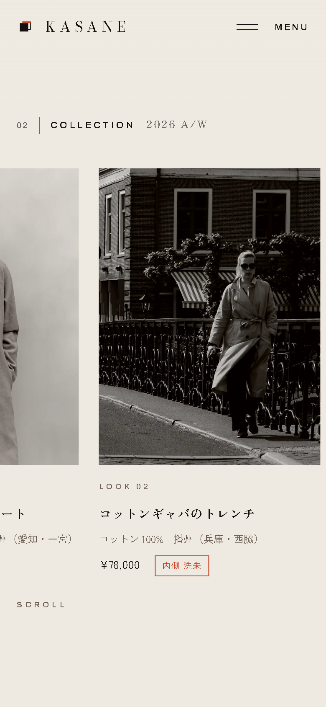
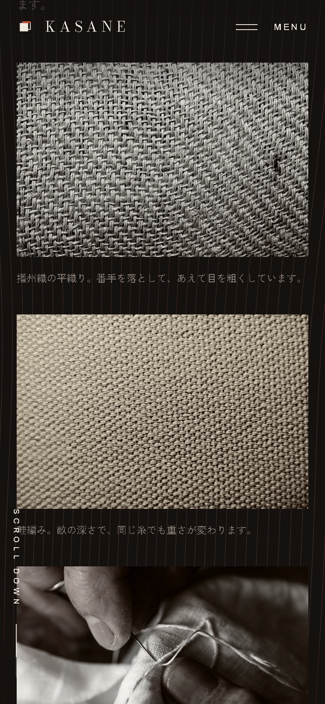
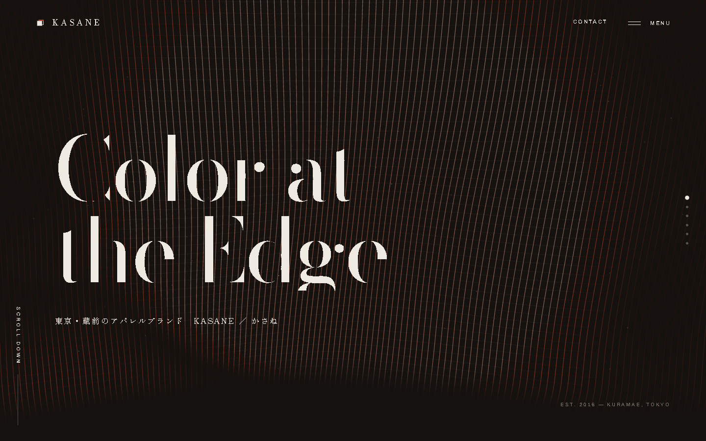

あわい ホームページ制作
自作の架空サイト KASANE
お店の個性を、
ホームページに。
ホームページに。
声
お店の個性を、ホームページに。
映像
KASANEの生地の線が動くトップを、画面いっぱいに。最初から「あわい｜ホームページ制作」を添える。
各SNSへの通常投稿用 · 修正案 02
名義は「あわい」に統一し、個人名は出しません。動く生地のトップから服の写真、素材の接写へ。KASANEの実際の画面を大きく見せ、あわいが作れるホームページを伝えます。
こちらの提案：縦型9:16・約25秒・合成ナレーション・BGMなし。声の長さに合わせて調整します。

声
お店の個性を、ホームページに。
映像
KASANEの生地の線が動くトップを、画面いっぱいに。最初から「あわい｜ホームページ制作」を添える。

声
見せたいものに合わせて、
映像
実際のサイトをスクロールし、服の写真が横に並ぶ章へ。服の写真を大きく見せる。

声
写真も、文字も、動きも整えます。
映像
生地の接写へ移り、サイト本来の文字と背景の動きを見せる。服の写真から素材へと、見えるものを変える。

声
スマホでも、お店の雰囲気が伝わるように。
映像
PC画面とスマホ画面を並べ、同じKASANEの見せ方が画面幅に合わせて変わるところを見せる。
ホームページ制作
あわいご相談はDMへ。声
ホームページ制作、あわい。ご相談はDMへ。
映像
あわいの名前とホームページ制作の文字を残し、DMの案内を出す。個人名は入れない。